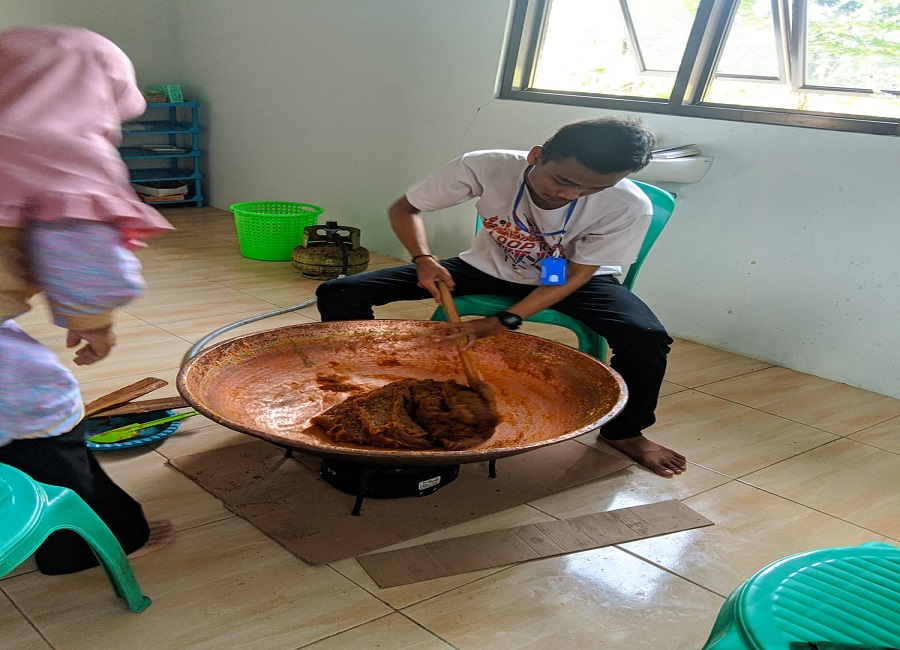
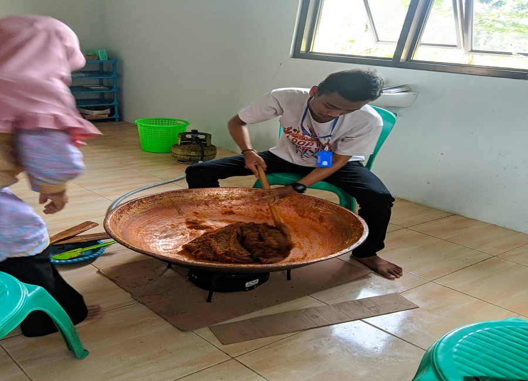

Jus Mangga
Proses Awal
Untuk Pembuatan Jus Mangga, kita menggunakan jenis mangga Gedong. Bahan-bahan yang digunakan untuk membuat Jus Mangga ini diantaranya mangga, gula.
Pertama penyortiran buah mangga yang siap diolah menjadi Jus. Selanjutnya proses pencucian dan pengupasan buah mangga. setelah pengupasan, dilanjut dengan penimbangan.
15Kg buah mangga yang sudah dikupas dapat menghasilkan kurang lebih 50pcs dodol mangga.
Proses Kedua
 

Proses yang kedua yaitu pemasakan. Di proses ini, mangga yang sudah di kupas dan ditimbang langsung dimasak dengan api besar.
Waktu pengerjaan proses ini kurang lebih selama 3-4 jam. Dan selama dimasak harus selalu diaduk agar mangga tidak gosong.
Setelah mangga sudah terlihat lembut, masukkan gula secukupnya dan aduk kembali hingga mangga berubah warna menjadi kecoklatan. Dalam proses ini dibutuhkan kesabaran karena harus terus diaduk sampai menjadi dodol.
Setelah itu masukkan santan dan tepung lalu aduk kembali. setelah warna mangga sudah kecoklatan, masukkan mentega agar tidak lengket. Jika dodol sudah tidak lengket di tangan, pindahkan ke wadah besar lalu tiriskan.
Proses Ketiga
Proses ketiga yaitu pengemasan. Dalam proses ini, dodol yang sudah ditiriskan dibentuk panjang, dibungkus dengan plastik dan dimasukkan ke kemasan. Dalam 1pcs diisi 10 buah dodol mangga.
Dan setelah dikemas, dodol siap untuk dipasarkan ke berbagai toko. Untuk 1 pcs dodol mangga dibandrol dengan harga 10.000 rupiah.